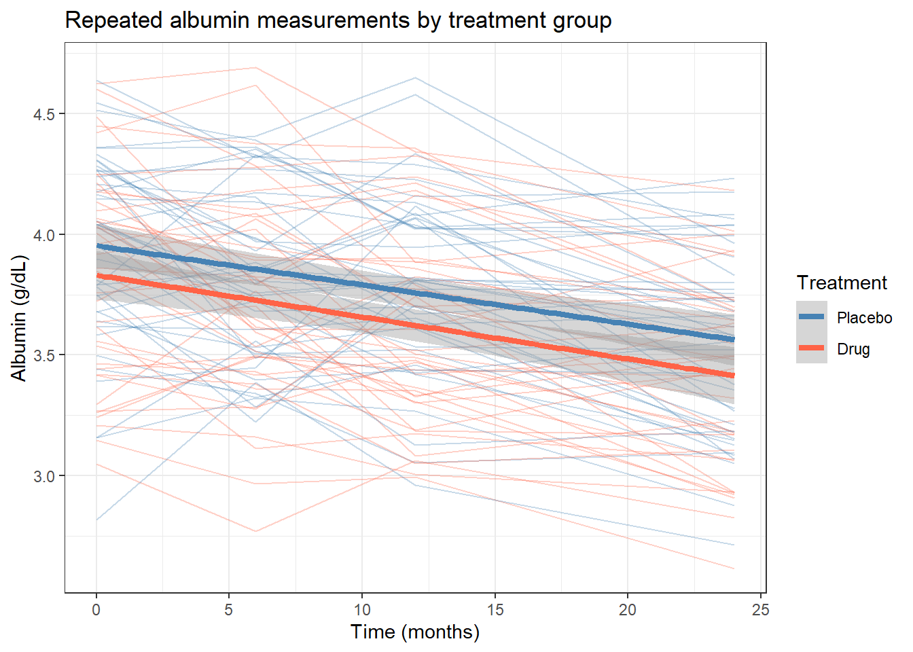
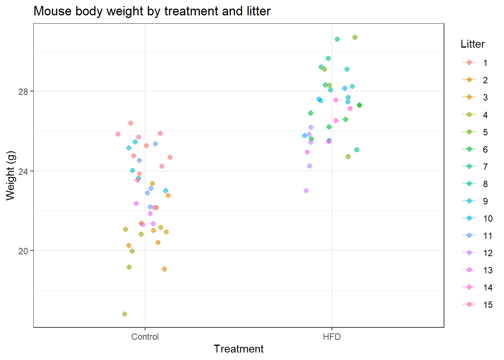

22Mixed Models: Random Effects and Repeated Measures
Before You Start
Mixed models extend linear regression to handle repeated measures and clustered data. Complete the Linear Regression and Multiple Regression sessions before starting this one.
22.1 When Do You Use This?
Your data have a grouped or hierarchical structure � repeated measurements on the same individuals over time, participants nested within clinics, or samples from the same animal litter. Standard regression assumes all observations are independent, which is violated whenever observations share a common source. Mixed models handle this by estimating a random effect for each group, correctly accounting for within-group correlation and preventing inflated Type I error. For example: a biomarker measured at multiple clinic visits per patient, or body weight measurements across litters in an animal experiment.
22.2 Learning Objectives
After completing this session you will be able to:
Explain why repeated measures and clustered data violate ordinary regression assumptions
Fit a random-intercept model with lmer() and glmer() from lme4
Interpret fixed effects and random effects
Calculate the intraclass correlation coefficient (ICC)
Compare models with different random effects structures using AIC
22.3 Background: Fixed Effects, Random Effects, and Correlation Structure
Fixed effects are the predictors you care about ? the treatment, time, or exposure. They estimate the population-average relationship between a predictor and the outcome.
Random effects model the variation between higher-level units (patients, litters, hospitals) that introduces correlation within those units. A random intercept allows each unit to have its own baseline level; a random slope allows the relationship between a predictor and the outcome to vary by unit.
where \(b_{0j} \sim \mathcal{N}(0, \sigma_b^2)\) is the random intercept for unit \(j\), and \(\varepsilon_{ij} \sim \mathcal{N}(0, \sigma^2)\) is the residual.
ICC = 0.4 means 40% of the total outcome variance is attributable to between-patient differences. High ICC means you strongly need the random effect.
22.4 Example 1: Repeated Measures in PBC Patients
PBC does not include longitudinal data by default. We simulate plausible repeated albumin measurements to illustrate the model structure.
set.seed(2024)n_patients <-80n_visits <-4pbc_long <-tibble(id =rep(1:n_patients, each = n_visits),visit =rep(1:n_visits, times = n_patients),time =rep(c(0, 6, 12, 24), times = n_patients), # monthstrt =rep(sample(c("Drug", "Placebo"), n_patients, replace =TRUE), each = n_visits),# True random intercept per patientu_i =rep(rnorm(n_patients, 0, 0.35), each = n_visits)) %>%mutate(albumin =3.8-0.015* time # decline over time+0.10* (trt =="Drug") # drug effect+ u_i # patient-level variation+rnorm(n_patients * n_visits, 0, 0.20), # residual noisetrt =factor(trt, levels =c("Placebo", "Drug")) )head(pbc_long, 8)
# A tibble: 8 × 6
id visit time trt u_i albumin
<int> <int> <dbl> <fct> <dbl> <dbl>
1 1 1 0 Placebo -0.305 3.44
2 1 2 6 Placebo -0.305 3.34
3 1 3 12 Placebo -0.305 3.05
4 1 4 24 Placebo -0.305 3.10
5 2 1 0 Drug -0.00164 3.76
6 2 2 6 Drug -0.00164 3.81
7 2 3 12 Drug -0.00164 3.50
8 2 4 24 Drug -0.00164 3.32
22.4.1 Visualise the Longitudinal Data
pbc_long %>%ggplot(aes(x = time, y = albumin, group = id, color = trt)) +geom_line(alpha =0.3) +geom_smooth(aes(group = trt), method ="lm", se =TRUE, linewidth =1.5) +scale_color_manual(values =c("steelblue", "tomato")) +labs(title ="Repeated albumin measurements by treatment group",x ="Time (months)", y ="Albumin (g/dL)", color ="Treatment") +theme_bw()
`geom_smooth()` using formula = 'y ~ x'

22.4.2 Fit a Random-Intercept Model
fit_ri <-lmer(albumin ~ time + trt + (1| id), data = pbc_long, REML =FALSE)summary(fit_ri)
Linear mixed model fit by maximum likelihood ['lmerMod']
Formula: albumin ~ time + trt + (1 | id)
Data: pbc_long
AIC BIC logLik -2*log(L) df.resid
80.3 99.1 -35.1 70.3 315
Scaled residuals:
Min 1Q Median 3Q Max
-2.75708 -0.55592 0.07894 0.55898 2.92019
Random effects:
Groups Name Variance Std.Dev.
id (Intercept) 0.11780 0.3432
Residual 0.03815 0.1953
Number of obs: 320, groups: id, 80
Fixed effects:
Estimate Std. Error t value
(Intercept) 3.95880 0.05721 69.201
time -0.01680 0.00123 -13.652
trtDrug -0.13372 0.07982 -1.675
Correlation of Fixed Effects:
(Intr) time
time -0.226
trtDrug -0.680 0.000
# Naive model (ignores litter clustering)fit_naive <-lm(weight_g ~ treatment, data = mouse_data)# Mixed model (random intercept per litter)fit_litter <-lmer(weight_g ~ treatment + (1| litter), data = mouse_data, REML =FALSE)# Compare treatment effect estimatesbind_rows( broom::tidy(fit_naive, conf.int =TRUE) %>%filter(term =="treatmentHFD") %>%mutate(model ="OLS (ignores litter)"),tidy(fit_litter, conf.int =TRUE, effects ="fixed") %>%filter(term =="treatmentHFD") %>%mutate(model ="Mixed model (random litter)")) %>%select(model, estimate, conf.low, conf.high, p.value)
# A tibble: 2 × 5
model estimate conf.low conf.high p.value
<chr> <dbl> <dbl> <dbl> <dbl>
1 OLS (ignores litter) 4.34 3.41 5.27 5.21e-14
2 Mixed model (random litter) 4.34 2.70 5.97 NA
The mixed model correctly accounts for within-litter correlation, giving appropriately calibrated standard errors.
mouse_data %>%ggplot(aes(x = treatment, y = weight_g, color =factor(litter))) +geom_jitter(width =0.15, alpha =0.6, size =2) +geom_line(aes(group = litter), stat ="summary", fun = mean,alpha =0.5, linewidth =0.5) +labs(title ="Mouse body weight by treatment and litter",x ="Treatment", y ="Weight (g)", color ="Litter") +theme_bw() +theme(legend.position ="right")
`geom_line()`: Each group consists of only one observation.
ℹ Do you need to adjust the group aesthetic?

22.5.1 Extracting Random Effects
# How much does each litter deviate from the grand mean?ranef(fit_litter)$litter %>% tibble::rownames_to_column("litter") %>%arrange(desc(`(Intercept)`)) %>%head(8)
lme4::sleepstudy: Reaction time measured on 18 subjects over 10 days of sleep deprivation ? the canonical random-slope example.
nlme::Orthodont: Growth measurements in children over time ? classic repeated-measures dataset.
survival::pbc: Simulate longitudinal data from the cross-sectional baseline as shown above, or use pbcseq for a real longitudinal extension.
Your own data: Any experiment with repeated measures per subject (cell line, animal, patient) or a hierarchy (animals within litters, patients within clinics) is a candidate for a mixed model.
22.7 What Can Go Wrong
Using a paired t-test or repeated-measures ANOVA when you have covariates These simpler methods cannot adjust for continuous covariates or handle unbalanced time points. A mixed model does both.
Over-complex random effects structures Fitting a random slope for every predictor often leads to singular fits (variance estimate collapses to zero) or convergence failures. Start with a random intercept and add random slopes only if theoretically motivated and if the model converges.
Singular fit warninglmer() warns “singular fit” when the random effects variance is estimated as zero or the correlation between random effects is ?1. This usually means the model is overparameterised for your data. Simplify the random effects structure.
Interpreting the ICC as a nuisance High ICC is not a problem to solve ? it is a finding. It tells you there is substantial patient-level (or litter-level) variation that your predictors do not explain. Report it and consider whether it has scientific meaning.
22.8 Exercises
22.8.1 Exercise 1 (Guided): Fit a Random-Intercept Model
Using pbc_long from the Example:
Fit a random-intercept model: lmer(albumin ~ time + (1 | id), data = pbc_long, REML = FALSE) (no treatment term).
Add treatment: lmer(albumin ~ time + trt + (1 | id), ...). Compare AIC.
Report the fixed-effect coefficient for treatment with 95% CI.
Calculate the ICC.
Exercise 1: Solution
m0 <-lmer(albumin ~ time + (1| id), data = pbc_long, REML =FALSE)m1 <-lmer(albumin ~ time + trt + (1| id), data = pbc_long, REML =FALSE)AIC(m0, m1)
Warning in checkConv(attr(opt, "derivs"), opt$par, ctrl = control$checkConv, :
unable to evaluate scaled gradient
Warning in checkConv(attr(opt, "derivs"), opt$par, ctrl = control$checkConv, : Model failed to converge: degenerate Hessian with 1 negative eigenvalues
See ?lme4::convergence and ?lme4::troubleshooting.
Using lme4::sleepstudy, fit a random-intercept and then a random-slope model for reaction time as a function of days of sleep deprivation. Report:
The population-average slope for days (fixed effect).
The between-subject SD for slope (random effect).
Whether the random slope significantly improves fit (LRT).
A “spaghetti plot” of individual trajectories.
Write a Methods paragraph as you would in a neuroscience paper.
22.9 Comprehension Check
You have 50 mice from 10 litters (5 per litter). Your outcome is tumour volume and your predictor is drug dose. Why should you use a mixed model rather than simple regression?
The ICC in your model is 0.55. What does this mean?
lmer() gives a “singular fit” warning. What should you do?
The fixed effect for time is -0.015 (SE = 0.004) in your mixed model. Interpret this estimate.
You want to know whether the slope of albumin over time differs by treatment. How would you specify this model?
Answers
Mice from the same litter share genetic background and early environment, making their tumour volumes correlated within litter. Ignoring this within-litter correlation treats 50 mice as 50 independent observations, but the effective sample size is closer to 10 (litters). Simple regression will produce standard errors that are too small, inflating Type I error. A random intercept per litter accounts for this correlation.
ICC = 0.55 means 55% of the total outcome variance is explained by between-patient (or between-litter) differences. 45% is within-patient noise. High ICC indicates substantial clustering ? the random effect is important and cannot be ignored.
Singular fit means one variance component is estimated as zero or a correlation is ?1 ? the model is too complex for your data. First, check whether the random slope or random correlation term is the issue (isSingular(fit) details). Simplify the random effects structure: remove random slopes, set correlations to zero with (0 + time | id), or use only a random intercept.
Holding treatment constant, albumin declines by 0.015 g/dL per month on average across patients. This is the population-average rate of decline (fixed effect), not the rate for any individual patient.
Specify a treatment ? time interaction in the fixed effects and a random slope for time: lmer(albumin ~ time * trt + (1 + time | id), data = ..., REML = FALSE). The interaction term time:trtDrug gives the difference in slope between Drug and Placebo. The random slope (1 + time | id) allows individual patients to have their own rate of change.
22.10 Further Reading
Bates et al. (2015) — Fitting Linear Mixed-Effects Models Using lme4 (JSS paper, free online)
Zuur et al. (2009) — Mixed Effects Models and Extensions in Ecology with R
?lmer, ?glmer in R
broom.mixed package for tidy output from mixed models
performance::icc() documentation
Bates, Douglas, Martin Maechler, Ben Bolker, and Steve Walker. 2015. “Fitting Linear Mixed-Effects Models Using Lme4.”Journal of Statistical Software 67 (1): 1–48.
Zuur, Alain F., Elena N. Ieno, Neil J. Walker, Anatoly A. Saveliev, and Graham M. Smith. 2009. Mixed Effects Models and Extensions in Ecology with r. Springer.